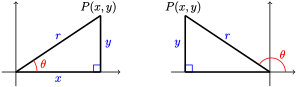

Coordinate Definitions of the Trigonometric Ratios
- \(\cos \theta = \dfrac{x}{r}\)
- \(\sin \theta = \dfrac{y}{r}\)
- \(\tan \theta = \dfrac{y}{x}\)


If a triangle has sides of length \(a\) and \(b\text{,}\) and the angle between those two sides is \(\theta\text{,}\) then the area of the triangle is given by

If the angles of a triangle are \(A, B\text{,}\) and \(C\text{,}\) and the opposite sides are respectively \(a, b,\) and \(c\text{,}\) then

or equivalently,
You can remember the trig values for the special angles if you memorize two triangles:

For the trigonometric ratios of most angles, your calculator gives approximations, not exact values.
If the angles of a triangle are \(A, B\text{,}\) and \(C\text{,}\) and the opposite sides are respectively \(a, b,\) and \(c\text{,}\) then
| If we know: | We can use: |
| 1. One side and two angles (SAA) | 1. Law of Sines, to find another side |
| 2. Two side and the angle opposite one of them (SSA) (the ambiguous case) |
2. Law of Sines, to find another angle, or Law of Cosines, to find another side |
| 3. Two sides and the included angle (SAS) | 3. Law of Cosines, to find the third side |
| 4. Three sides (SSS) | 4. Law of Cosines, to find an angle |
Use facts about supplementary angles to answer the questions in Problems 1and 2.
If \(\sin \theta = \dfrac{1}{2}\text{,}\) what is \(\sin (180\degree - \theta)\) ? What are the possible values for \(\cos \theta\) ?
If \(\sin \theta = \dfrac{3}{5}\text{,}\) what is \(\sin (180\degree - \theta)\) ? What are the possible values for \(\cos \theta\) ?
Two sides of a triangle are 12 and 9 units long. The angle \(\theta\) between those sides is \(66\degree\text{.}\)
A triangle has base 5 units and altitude 6 units, and another side of length 8 units.
For Problems 5–12,
The point \((-2,3)\) is on the terminal side.
The point \((-1,6)\) is on the terminal side.
The point on the terminal side 20 units from the origin has \(x\)-coordinate \(-16\text{.}\)
The point on the terminal side 25 units from the origin has \(x\)-coordinate \(-7\text{.}\)
\(\theta\) is obtuse, and the point on the terminal side 6 units from the origin has \(y\)-coordinate \(5\text{.}\)
\(\theta\) is obtuse, and the point on the terminal side 4 units from the origin has \(y\)-coordinate \(1\text{.}\)
\(\theta\) is obtuse, and \(\sin \theta = 0.96.\)
\(\theta\) is obtuse, and \(\sin \theta = 0.8.\)
For Problems 13–16, solve the equation. Round to the nearest \(0.1\degree\text{.}\)
For Problems 17–18,
Find the area of the triangular plot of land shown at right if \(\theta = 109.9\degree\text{.}\)
5127.39 sq ft
What is the area of the triangular piece of tile shown at right?
For Problems 21–22, use the Law of Sines to find the indicated angle. Round to two decimal places.
For Problems 23–26, use the Law of Sines to find the indicated side. Round to two decimal places.
For Problems 27–30, use the Law of Cosines to find the indicated side. Round to two decimal places.
For Problems 31–40,
or
For Problems 41–46,
A radio tower is 40 miles from an airport, in the direction of \(23\degree\) east of north. Maria flies due north from the airport, and after 12 minutes, she sees the radio tower in the direction \(37\degree\) east of north. How far has she traveled, and what is her average ground speed?
As Odysseus begins a sailing journey, an island 2 kilometers distant is in the direction \(12\degree\) west of north. After he sails due east for a time, the island is \(75\degree\) west of north. How far has Odysseus sailed?
Delbert and Francine are standing 100 meters apart on one side of a stream. A tree lies on the opposite shore. The angle Delbert sees from Francine to the tree is \(37\degree\text{,}\) and the angle Francine sees from Delbert to the tree is \(46\degree\text{.}\) How far is Delbert from tree?
Evel and Carla are estimating the distance across a canyon. They stand 75 meters apart and each site a larger boulder on the opposite side. Evel measures an angle of \(82\degree\) from Carla to the boulder, and Carla measures an angle of \(74\degree\) from Evel to the boulder. How far is Evel from the boulder?
A blimp is flying in a straight line towards a football stadium. Giselle and Hakim have homes 520 meters apart, both directly below the blimp's path. At a moment when the blimp is between them, Giselle measures an angle of elevation to the blimp to be \(38\degree\text{,}\) and Hakim measures the angle of elevation to be \(42\degree\text{.}\)
353.32
A model plane flying in a straight line passes directly over both first Adi's and then Bettina's head. Adi sees an angle of elevation of \(17\degree\) to the plane and Bettina sees an angle of elevation of \(58\degree\text{.}\) Adi and Bettina are 150 meters apart, and Bettina is between Adi and the plane.
You are viewing the Statue of Liberty from sea level at a horizontal distance of 65 meters from the point below the torch. Standing on its pedestal above sea level, the statue subtends an angle of \(19.5\degree\text{,}\) and the angle of elevation to the foot of the statue is \(32.3\degree\text{.}\) See the figure at right.
King Kong is hanging from the top of a building. From a safe distance Sherman measures that Kong subtends an angle of \(1.5\degree\text{,}\) and the angle of elevation to Kong's foot is \(47.3\degree\text{.}\) See the figure at right. We know that Kong is 60 feet tall.
Here is a surveyor's technique for making a right angle.
Of course, the accuracy of the right angle constructed in this way depends on the accuracy of the measurements of length. Problems 49 and 50 refer to the surveyor's technique.
Suppose that you use the surveyor's technique to create a right angle, but all three of your distance measurements are in error. The actual sides of your triangle are \(a = 2.9,~ b = 3.9,~ c = 5.1\text{.}\) How far off from \(90\degree\) is the angle at \(C\text{?}\)
Suppose that you use the surveyor's technique to create a right angle, but the true distance measurements are\(a = 3.1,~ b = 4.1,~ c = 5.1\text{.}\) How far off from \(90\degree\) is the angle at \(C\text{?}\)
Triangle \(ABC\) has sides \(a = 5,~ b = 8,~ c = 9\text{.}\) How far from \(B\) is the foot of the altitude from point \(A\text{?}\)
4.2
Triangle \(ABC\) has sides \(a = 53,~ b = 27,~ c = 71\text{.}\) How far from \(C\) is the foot of the altitude from point \(A\text{?}\)
The hour hand of Big Ben is 9 feet long, and the minute hand is 14 feet long. How far apart are the tips of the two hands at 5:00 o'clock?
22.25 ft
The largest clock in the world sits atop the Abraj Al Bait Towers in Mecca, Saudi Arabia. The clock face is 46 meters in diameter, the minute hand is 22 meters long, and the hour hand is 17 meters long. How far apart are the tips of the two hands at 8:00 o'clock?
How far away is a star with a parallax of \(5.2^{\prime \prime}\) when observed from opposite ends of earth's orbit?
79,332.6 AU
How far away is a star with a parallax of \(23^{\prime \prime}\) when observed from opposite ends of earth's orbit?
Problems 57–58 provide a geometric interpretation of the Law of Sines. Recall the fact from geometry that the measure of an angle inscribed in a circle is half the intercepted arc.
In the figure, the circle centered at \(O\) circumscribes \(\triangle XYZ\text{.}\) Suppose that \(\theta = \angle X\) is an acute angle, and the side opposite \(\theta\text{,}\) \(\overline{YZ}\text{,}\) has length \(s\text{.}\) Notice that \(\triangle OYZ\) is isosceles, because two of its sides are radii of the circle.
Let \(\triangle ABC\) have lengths \(a,~ b\text{,}\) and \(c\) opposite the angles \(A,~ B\text{,}\) and \(C\) as usual. Use the result of Problem 57, the Law of Sines, and the fact that every triangle has an acute angle to show that the quantities \(\dfrac{a}{\sin A}\text{,}\) \(\dfrac{b}{\sin B}\text{,}\) and \(\dfrac{c}{\sin C}\) all represent the diameter of the circumscribing circle.